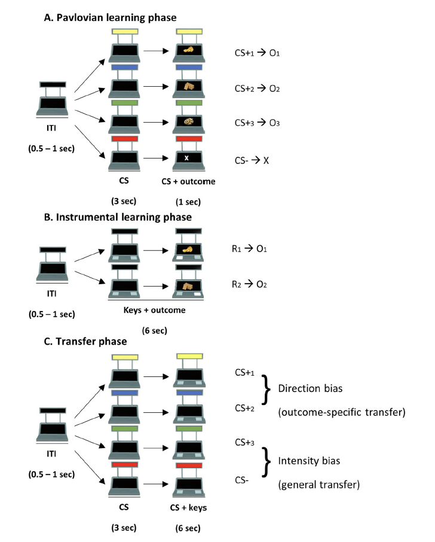
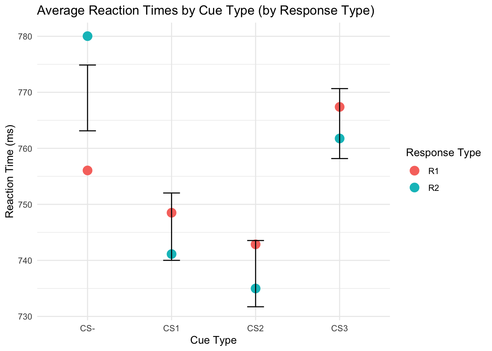
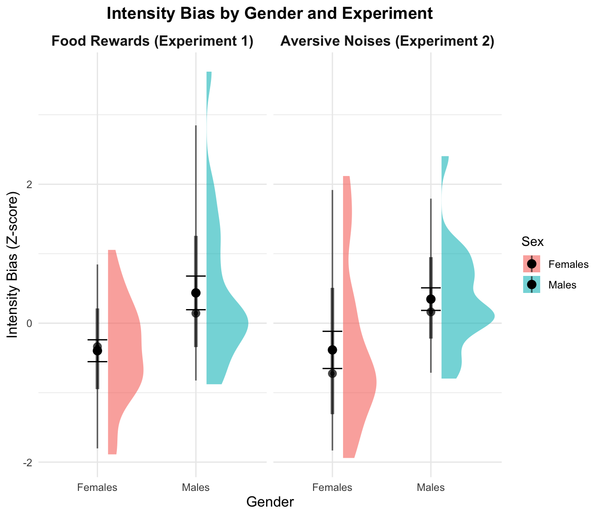
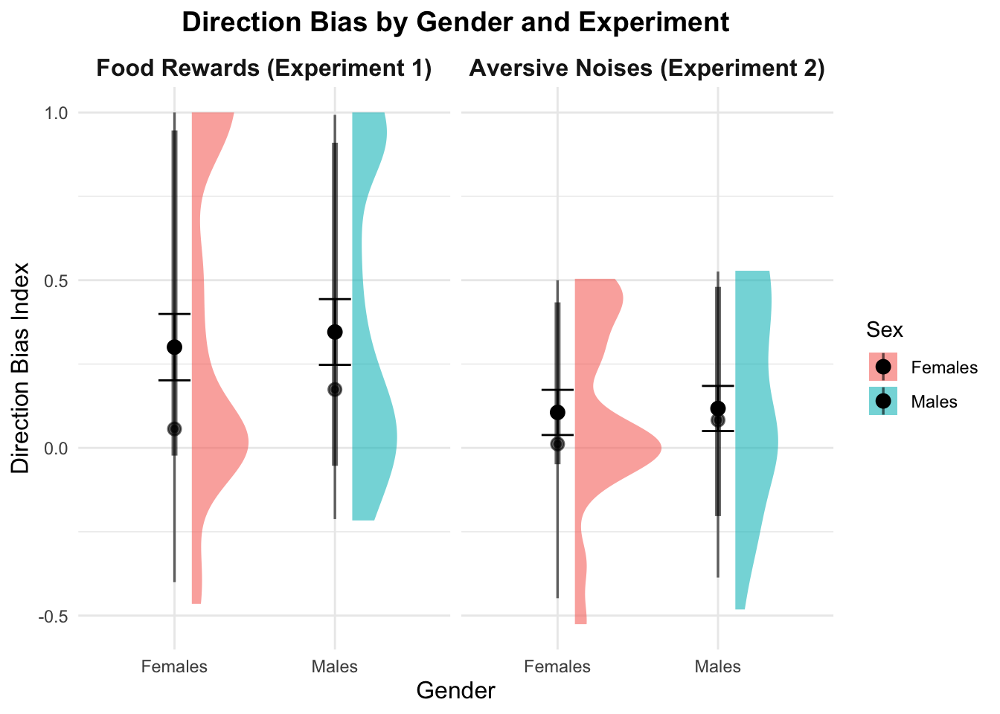

How do people respond to different types of motivational cues?
Do men and women respond differently to rewards and punishments, and how does this influence the intensity and way they approach tasks?
Jennifer Curi1
1 Rutgers University - New Brunswick
Introduction
What motivates human behavior: reward or fear of punishment? This study explores how appetitive (positive) and aversive (negative) cues influence reactions, and whether these effects differ between males and females. The data comes from a study by PHD Students at the University of Bologna in Italy. Sex differences in motivational biases over instrumental actions - Open Science Framework (OSF) (Contributors: Luigi Degni Sara Garofalo Gianluca Finotti Francesca Starita). In this project, I will be looking at the comparison in Intensity and Direction Bias across gender and exxperiments and the reaction times per motivational cue.
Methods
This study examined direction bias (how cues guide specific actions) and intensity bias (how hard the responses triggered by cues). Two experiments using the Pavlovian-to-Instrumental Transfer (PIT) paradigm assessed these biases:
Experiment 1: Appetitive Cues
- Goal: Understand how food rewards influence decisions.
- Setup: Participants associated visual cues (CS+ or CS−) with rewards and response-reward pairings, then performed a transfer phase with no rewards.
- Measures: Reaction times (RT) and action congruence.
Experiment 2: Aversive Cues
- Goal: Assess avoidance behavior in response to unpleasant noises.
- Setup: Participants associated visual cues with noises and learned avoidance actions via joystick movements and grip force. The transfer phase tested cue influence without actual noises.
- Measures: Grip force and action congruence.
| Aspect | Experiment 1 (Appetitive) | Experiment 2 (Aversive) |
|---|---|---|
| CS+ (Motivational) | Predicts rewards | Predicts avoidance of noise |
| CS− (Neutral) | Predicts no reward | Predicts no noise |
| Intensity Bias | Faster RT with CS+ vs. CS− | Stronger grip force with CS+ vs. CS− |
| Direction Bias | Congruent actions with CS+1/CS+2 | Congruent actions with CS+1/CS+2 |
| R1 (Response 1) | Press a specific key | Move joystick left/right |
| R2 (Response 2) | Press a different key | Squeeze handgrip |

Figure 1: Overview of experimental set up
Results
- Average Reaction Times Across CS Types (CS-, CS1, CS2, CS3):

Figure 2: Reaction times vary across cue types. CS1 and CS2 show more consistent and faster responses, while CS- and CS3 display greater variability, suggesting weaker influence on behavior.
- Do Males and Females Differ in Intensity Bias?

Figure 3: Males had a stronger reaction to motivational cues than females in both experiments. Males responded more intensely, while females had smaller changes in their response strength.
- How Do Males and Females Differ in Direction Bias?

Figure 4: Males and females displayed similar direction bias across both experiments. There are overlapping distributions for Experiment 1 and Experiment 2, which indicates that motivational cues influence action choices equally across genders.
Conclusion
Overall, This study found that males showed stronger reactions to motivational cues compared to females, while both sexes responded similarly in choosing actions aligned with the cues. These findings help us understand how motivation affects behavior differently for men and women, which could have important implications for areas like mental health.
References
Degni, Luigi A. E., Sara Garofalo, Gianluca Finotti, Francesca Starita, Trevor W. Robbins, and Giuseppe di Pellegrino. 2024. “Sex Differences in Motivational Biases over Instrumental Actions.” Npj Science of Learning 9 (62). https://doi.org/10.1038/s41539-024-00246-6.